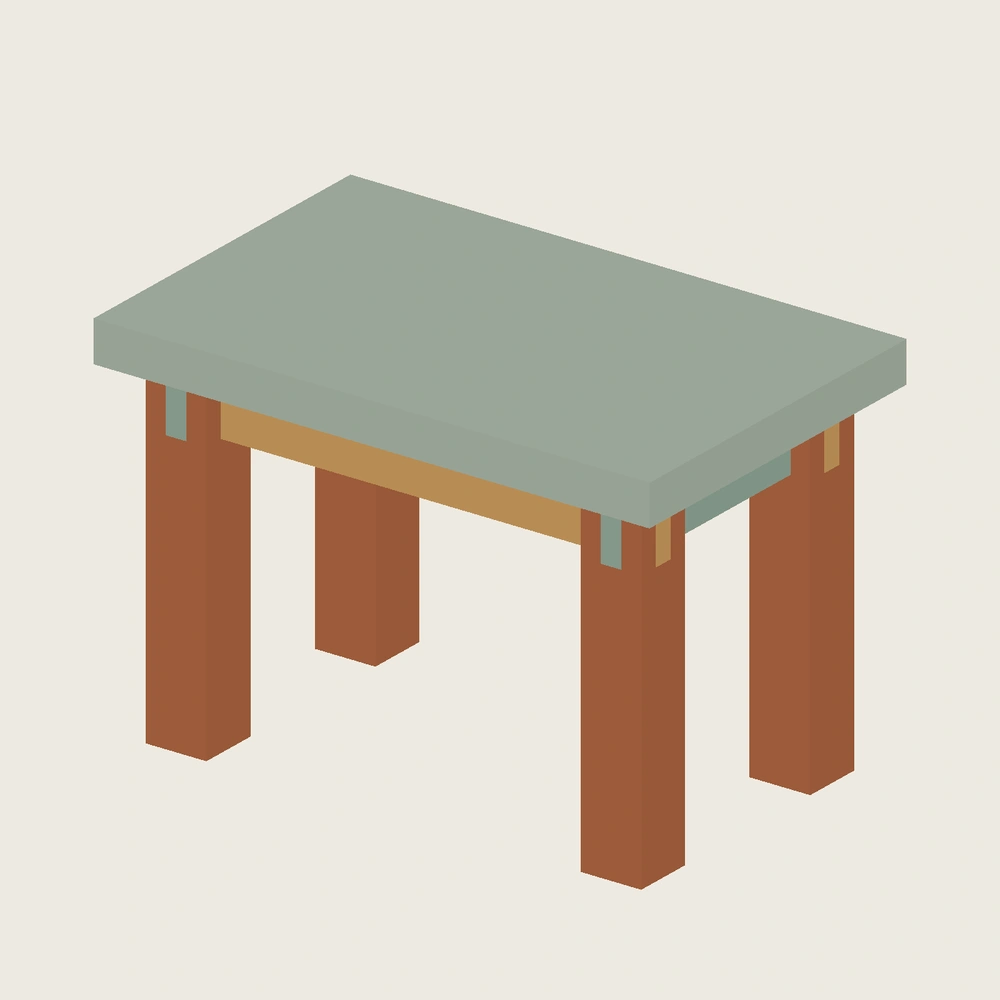
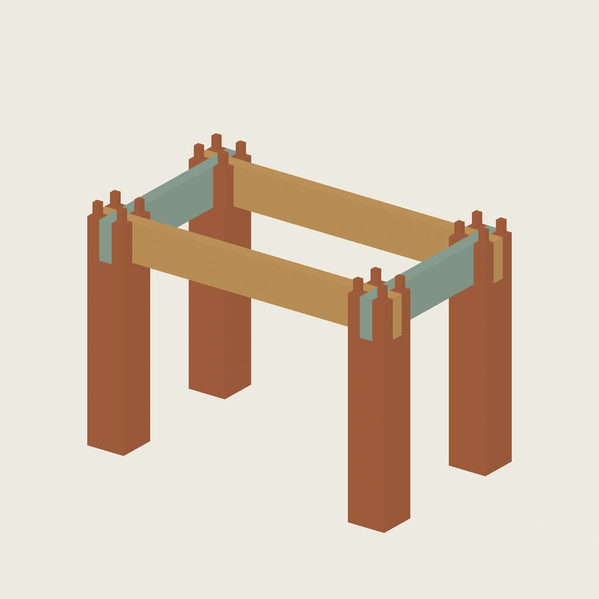
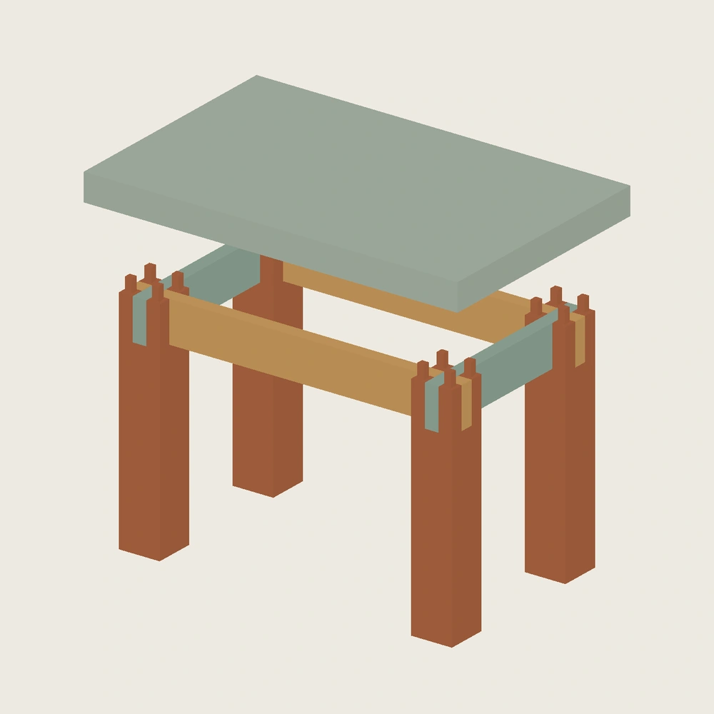
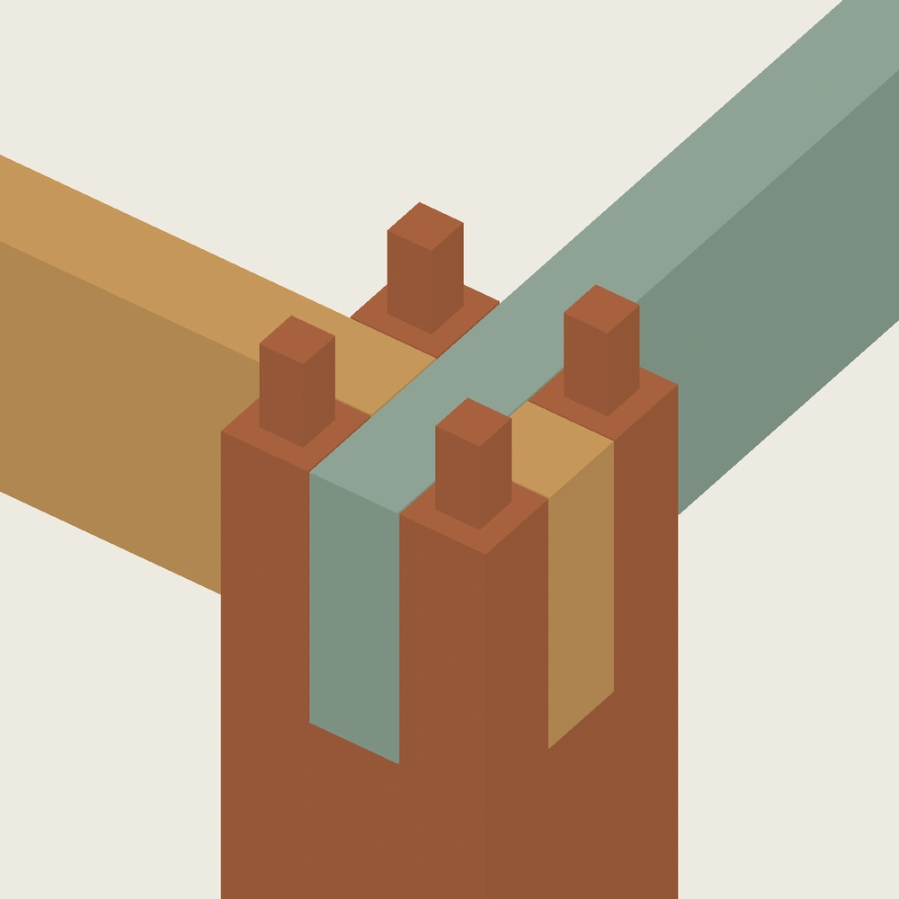

保留九件基础 BOM，明确接口变体
总外廓沿用 220×140×150 mm。上部件一件、腿四件、长牙条两件、短牙条两件；暂不增加直榫枨，也不拆分攒边装板。九件共用一个 FreeCAD 参数表，包含 26 张完全约束草图。
此处没有直接复制旧三件夹头节点：两向牙条在四角采用局部半搭接让位，腿顶改为四角顶榫，上部形成对应的 16 个盲卯。它是“夹头节点的双向半搭接 / 四角顶榫教学变体”，不与旧双顶榫版混装，不宣称是馆藏构造的等比例复原。
整案、去面板框架与同源单角




五段装入，闭环不用横塞封闭双端榫
预先把四腿定位到共同基准，需要手扶或临时定位支撑；不把预装自立和摩擦保持当作已验证事实。两根长牙条从上方依次进入，形成两片腿架；两根短牙条再从上方依次落入局部半搭接；最后上部同时对准四角顶榫下落。
| 阶段 | 固定条件 | 检查结果 |
|---|---|---|
| 长牙条 1 / 2 | 四腿已定位 | 分别通过 |
| 短牙条 1 / 2 | 两片腿架保持名义跨距 | 分别通过，端部半搭接避开另一向牙条 |
| 上部 | 四腿与四牙条均已到位 | 16 个盲卯同时接入，检查通过 |
五段各检查 49 个位置，合计 245 个采样位置，并逐段检查边界面平移扫掠。每段负越位对照出现预期干涉。本地动画按其逆序拆卸；退出件从画面移除，避免把停在上方的零件当成不存在的障碍物。
故意做错，检查能否抓住
- 短牙条不作局部半搭接：与已安装长牙条发生干涉。
- 上部孔位相对四腿发生横向错位：顶榫与盲卯发生干涉。
- 名义 STEP 中四足底共面、两条基准对角线相等；这只是几何条件，不能据此断言实物不摇摆。
独立进程重开完成 9 次单参数修改与恢复，源字节未改变；九个 STEP 实体与独立构造匹配，九份 STL 水密且绕向一致。本地 GLB 已解码核验 76 个显示位姿。原生母版、详细尺寸、BOM 报告和精确派生文件均留在本地，未同步 Onshape。
联合误差与局部试件已补一轮
新增 联合误差与局部试件审阅：81 个局部组合、27 个整案 X 向孔组配准组合，以及六种原生局部配置。已看到单项可容纳而叠加干涉，以及无干涉却存在内部搭接空隙的情况。有限网格不是制造良率；整案 Y 向、腿高差与扭曲仍未覆盖。
腿顶槽边余料和四个顶榫根部是优先试打观察区；当前没有安全壁厚或承载结论。还需入口导入、真实装配、侧向摇摆及循环拆装实验。共用参数定位不是材料接触或摩擦仿真。
2–3 盘仍是制作目标，尚未完成切片排版。作品级 S2 推进了九件 BOM、名义路径与有限误差检查，但不能写成全部设计检查已完成；Gate A 未通过，状态保持 DRAFT。